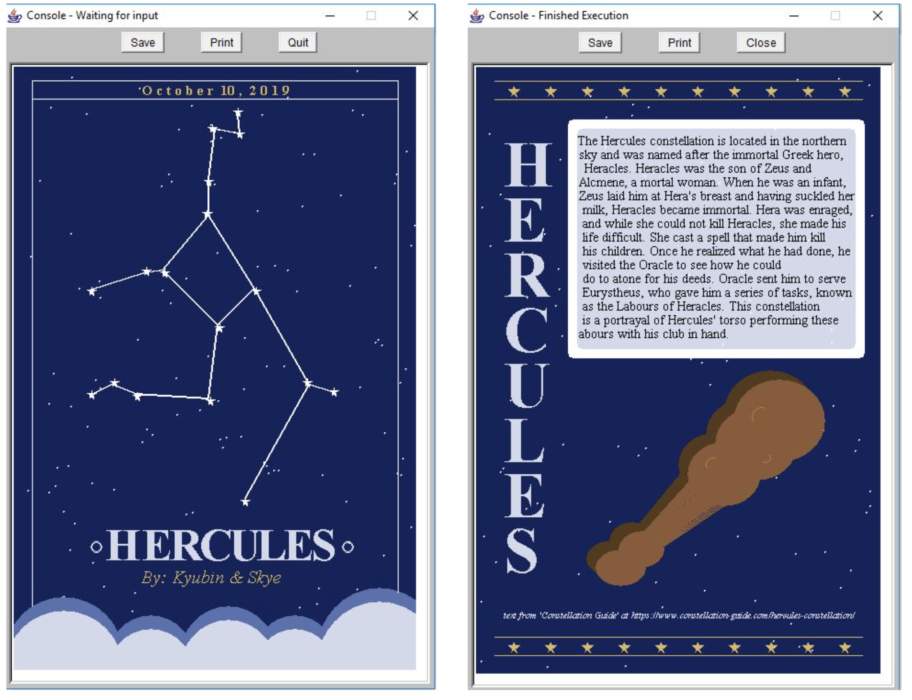

Projects
Game Explanation
This is my most current project which was worked on with Rachel Leong. The goal of the game is to survive a day at DisneyLand, namely in the Disney Shop and the Disney movie cinema, without infecting the ongoing COVID-19
virus. This game has a LEARN and a TEST level in which the players are taught information about the virus and are presented with two minigames that they have to pass in order to survive
and get infected. In the first minigame, the player’s goal is to collect all the items from the Disney shop while running away using the arrow keys from the employees who have been infected with the virus.
This game is played to demonstrate the importance of practicing social distancing when there is an ongoing virus. Within the second minigame, the player learns about different items that could be helpful in preventing
the spread of COVID-19 when leaving the house. Items mentioned include hand sanitizer, tissues, disinfecting wipes, face masks, and more. In the LEARN level of the second game, the players learn about which materials can
disinfect a corresponding colour of virus. In the TEST level, the player has to disinfect the theatre seats at the 4D cinematic experience by dragging and dropping the correct item on the virus.
Pixel Art
Shown in the image above, we individually pixelated each one of our images. As I was a complete beginner to pixel style art, it took me a longer time at the start
to figure out how to efficiently create the images so that it looked pixelated. However, after spending multiple hours everyday practicing pixel art, I was able to
quickly figure out how to use a wide variety of different shades of colours to create a 3D like imitation and was much more comfortable exploring multiple colours of the palette. In conclusion, I have become much more congenial to pixel art and I am able to quickly create a
multitude of backgrounds and objects.
What did I learn?
We used Java Swing to code our game which we found was quite easy to understand. The first thing I learned was how to use JFrames and JPanels to navigate between screens by clearing all the components and adding the
appropriate JPanel. Next, I learned how to use MouseInputListener and KeyListener to get user input and their methods were very easy to implement. The game that I was responsible for (mini game #1) implemented ActionListener, KeyListener, and MouseListener!
I studied how to make sure that everything would come together and found out in the process that the window required focus in order for any key input to be taken in. To overcome this issue, I made sure that the JPanel would request the focus everytime something new was drawn.
I also acquired knowledge on how to use the paintComponent method, the Timer, and ActionListener for my graphics to appear and have animation. I had a few issues, one being that because I had found out
that the KeyListener method would not loop so it would not check if the counter was beyond the borders if the key was held down in my mini game. I quickly solved the issue by using boolean variables and conditionals in the
actionPerformed method which allowed it to run smoothly.
This project was my ISP for ICS203. The objective of this game is to grow many successful plants that you can sell to earn money! You will buy seeds with the money that you start with and tend the plants until they have been nurtured from stage 1 to 3, which requires watering the plant two times. You can also use the fertilizer at stage 2 if you want to enhance your plant! There are two levels in this game and while you have 45 seconds to nurture the plants in level 1 you only have 20 seconds in level 2. The game will automatically reset if you hit the back button when playing. If you have no more money left and cannot earn any more, you will have lost!
This was my rendition on the well known all-time classic, Snakes and Ladders Game which was my ISP for ICS3U3. This game is played between two players on a gameboard having numbered gridded squares. A number of 'ladders' and 'snakes' are pictured on the board, each connecting two specific board squares. The two players will take turns rolling the dice. Then, it will move your counter forward the number of spaces shown on the dice. If the counter lands at the bottom of a ladder, you can move up to the top of the ladder. If the counter lands on the head of a snake, you must slide down to the bottom of the snake. The first player to get to the space that reaches the end of the grid is the winner. Your score will be recorded by the number of moves it takes a player to finish a game!
This was one of my projects from ICS3U3 where a trading card about the Hercules constellation was created!
